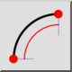
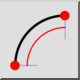
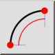
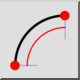

2 pontos e comprimento
Barra de ferramentas / Ícone:
 

Menu: Desenhe > Arco > 2 pontos e comprimento
Atalho: A, L
Comandos: arclength | al
Esta é uma tradução automática.
Barra de ferramentas / Ícone:
 

Menu: Desenhe > Arco > 2 pontos e comprimento
Atalho: A, L
Comandos: arclength | al
Desenha um arco usando o ponto inicial, o ponto final e o comprimento do arco.